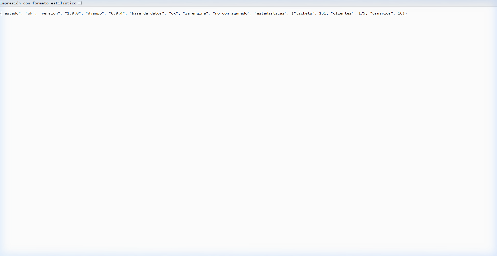
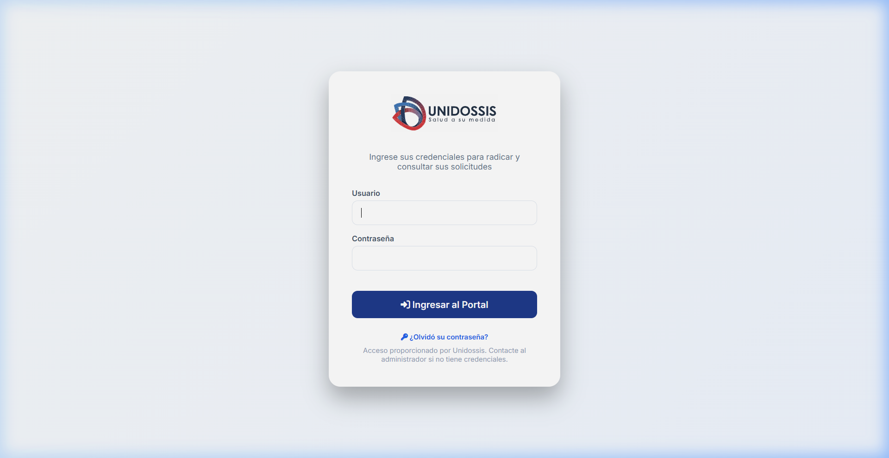
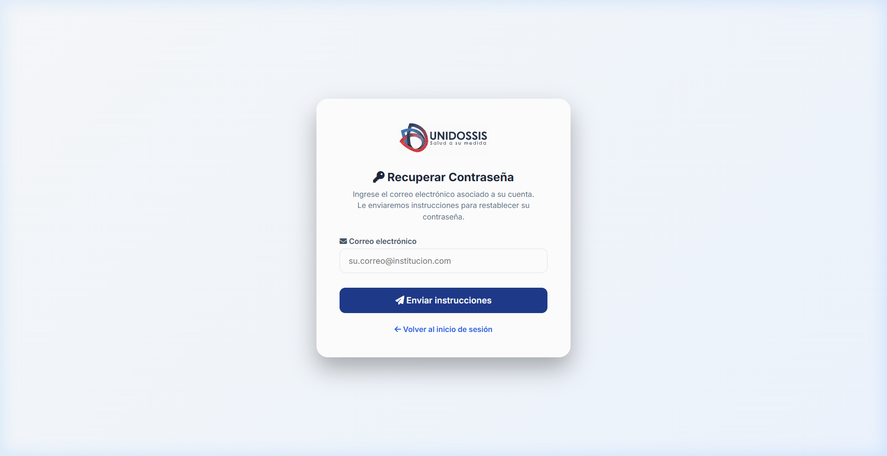
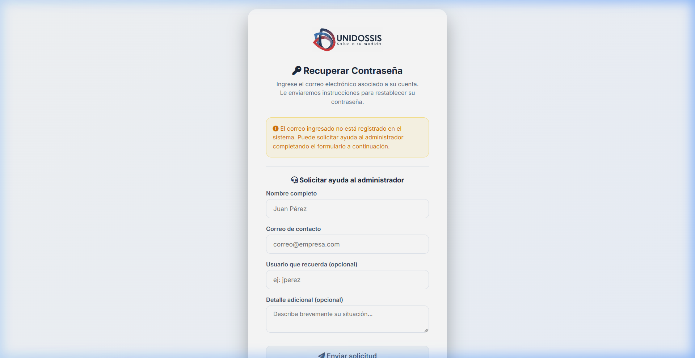

📋 Documento de Cambios — Sesión de Estabilización
Proyecto: UNIDOSSIS PQRS
Fecha: 17 de Abril de 2026
Resumen Ejecutivo: Se implementaron 6 mejoras fundamentales que elevan el proyecto de un prototipo funcional a una plataforma más robusta y segura.
Resumen de Mejoras
| # |
Cambio |
Tipo |
Impacto |
| 1 | Eliminación de API Key hardcodeada | 🔒 Seguridad | Crítico |
| 2 | SLA dinámico conectado a ConfiguracionSLA | 🔗 Bug Fix | Alto |
| 3 | Endpoint /health/ | 📊 Monitoreo | Medio |
| 4 | Suite de 67 tests automatizados | ✅ Calidad | Crítico |
| 5 | Recuperación de contraseña híbrida | 👤 UX | Alto |
| 6 | Modelo SolicitudResetPassword + Admin | 🗃️ Datos | Medio |
1. 🔒 Eliminación de API Key del Código Fuente
¿Qué se hizo? Se eliminó la clave real de la API de Google Gemini que estaba expuesta directamente en ia_engine.py.
Antes: Cualquier persona con acceso al código podía ver y usar la clave de Gemini.
Ahora: La clave está protegida exclusivamente por variables de entorno. Si no hay clave, el motor de IA cae al modo fallback (clasificación manual) sin errores.
2. 🔗 SLA Dinámico — El Panel de Configuración Ahora Funciona
¿Cuál era el problema? El sistema tenía un panel en la administración para configurar los días de SLA, pero el código internamente usaba valores fijos (10 y 14 días). El panel no servía de nada.
Ahora: La función estado_sla() lee de la tabla ConfiguracionSLA con un caché en memoria de 60 segundos. Si el admin cambia los umbrales, los semáforos del dashboard lo reflejan casi de inmediato sin afectar el rendimiento de la base de datos.
3. 📊 Endpoint /health/ — Monitoreo del Sistema
¿Qué es? Es una ruta pública oculta (una "puerta trasera" segura) que devuelve un diagnóstico instantáneo de la salud de toda la plataforma en formato JSON.
¿Dónde puedo verlo? Simplemente escribiendo /health/ al final de la URL del sistema. Por ejemplo: http://127.0.0.1:8000/health/ (o en el dominio de producción).
¿Para qué sirve?
- Sistemas externos: Herramientas como UptimeRobot pueden visitar esta URL cada 5 minutos. Si la respuesta no es "ok", te envían una alerta al celular de que el sistema se cayó.
- Diagnóstico rápido: Si el cliente reporta que "el sistema está lento", entras a esta URL y ves de inmediato si es problema de la base de datos, del motor de IA o de conexión.
- Despliegues seguros: Cuando actualizamos el sistema (con PUBLICAR.bat), podemos verificar automáticamente esta URL para confirmar que el servidor subió correctamente.

¿Qué verifica internamente? Comprueba la conexión a la base de datos (haciendo un conteo rápido de registros), verifica si las credenciales de la IA de Google están configuradas, y reporta la versión actual del código (para saber si la actualización se aplicó).
4. ✅ Suite Completa de 67 Tests Automatizados
El proyecto pasó de no tener tests a tener una suite robusta con 67 pruebas automatizadas que cubren las funciones críticas.
Resultado: Ran 67 tests in ~55s → OK ✅
- Modelos: SLA dinámico, IDs únicos, adjuntos, logs.
- Autenticación: Rate limiting (bloqueo tras 5 intentos fallidos), login/logout.
- Seguridad: Aislamiento de datos (un cliente solo ve lo suyo, un director regional solo su región).
- APIs y Vistas: Búsqueda, creación, cambio de estado, encuestas CSAT.
- IA y Notificaciones: Mock de Gemini y simulación de envío de correos.
5. 🔑 Recuperación de Contraseña — Sistema Híbrido
Se implementó un flujo completo de "¿Olvidó su contraseña?".
Login Actualizado
Se agregó el enlace de recuperación en el formulario de acceso.

Paso 1: Solicitud
El usuario ingresa su correo. El sistema busca de manera inteligente en el email del usuario y en los emails asociados al Cliente institucional.

Sistema Inteligente (Fallback)
Si el sistema tiene configurado el correo (SMTP), envía un enlace temporal seguro válido por 24 horas.
Si el correo NO existe en el sistema, muestra un formulario para que el usuario solicite ayuda al administrador:

6. 🗃️ Modelo SolicitudResetPassword
Cuando el SMTP no está configurado, las solicitudes de los usuarios que olvidaron su contraseña se guardan en la base de datos usando el nuevo modelo SolicitudResetPassword.
Beneficio: El administrador puede entrar al panel de Django Admin, ver las solicitudes pendientes, contactar al usuario, restablecer la contraseña y marcar la solicitud como resuelta. Todo el proceso queda auditado.
📈 Seguimiento del Plan de Auditoría Inicial
Al iniciar la sesión, realizamos una auditoría completa del proyecto (fase 1) para identificar vulnerabilidades y puntos de mejora antes de salir a producción. A continuación el balance:
✅ Lo que SE IMPLEMENTÓ (Fase de Estabilización):
- Protección de Credenciales (Crítico): Se eliminó la dependencia de tener la API Key de Gemini escrita directamente en el código. Ahora el sistema es seguro para estar en un repositorio.
- Lógica SLA Funcional (Alto): Se corrigió el error silencioso donde el panel administrativo de SLA no afectaba los colores del semáforo. Ahora el cálculo de tiempos responde al panel en tiempo real.
- Validación Continua (Crítico): Se implementó la suite de automatización con 67 pruebas. Esto garantiza que cualquier cambio futuro no rompa el sistema sin avisar.
- Endpoint de Salud (Medio): Se creó la ruta
/health/ para monitoreo externo, asegurando que podemos medir si el servidor está "vivo" en todo momento.
- Flujo de Recuperación de Contraseña (Alto): Un sistema híbrido para usuarios olvidadizos, reduciendo la carga operativa del administrador y manteniendo trazabilidad de quién solicitó accesos.
⏳ Lo que FALTA por Implementar (Fase 2 - Crecimiento):
Estos puntos quedaron registrados para nuestra próxima fase, ya que requieren de servicios externos o cambios arquitectónicos mayores:
- Seccionar por Módulos (Refactorización): Actualmente el archivo
views.py es un "monolito" gigante de más de 2,500 líneas de código. Esto lo hace difícil de mantener. Está pendiente dividirlo en archivos más pequeños y especializados (ej: views_auth.py, views_dashboard.py, views_tickets.py).
- Caché de Consultas Avanzado: Aunque en esta fase sí implementamos un mini-caché de 60 segundos específicamente para la configuración del SLA (para no saturar la base de datos cada vez que pinta un semáforo), aún falta implementar un sistema de caché global (usando Redis o Memcached) para las consultas pesadas del Dashboard (los KPIs y gráficos), lo cual acelerará drásticamente la carga de la pantalla principal.
- Ingesta Automática de Correos: Falta conectar el sistema por IMAP para que los correos que lleguen a la bandeja se conviertan solos en tickets. (Dependemos de tener las contraseñas de ese correo).
- Procesamiento Asíncrono (Celery/Redis): Actualmente, cuando el usuario radica un ticket, la página se queda cargando mientras la IA de Google analiza el texto. Hay que mover esto a un proceso "en segundo plano" (asíncrono) para que el sistema sea inmediato.
- Almacenamiento Seguro (Amazon S3): En PythonAnywhere, los archivos subidos (como fotos o PDFs) pueden perderse al reiniciar el servidor. Debemos conectar un "disco duro en la nube" (AWS S3) para que los archivos vivan ahí de forma permanente.
- Exportación a PDF: Implementar la capacidad de generar reportes en PDF con bibliotecas como
Weasyprint o ReportLab para entrega formal al cliente.
- Branding de Correos: Diseñar plantillas HTML visualmente atractivas ("Premium") para todas las notificaciones salientes del sistema.